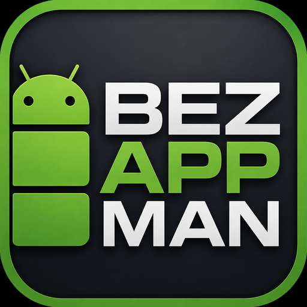
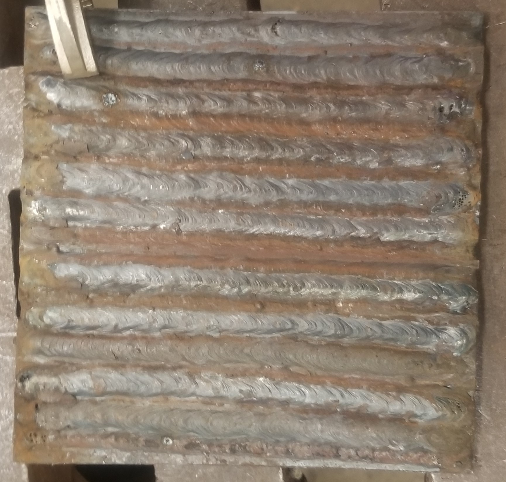
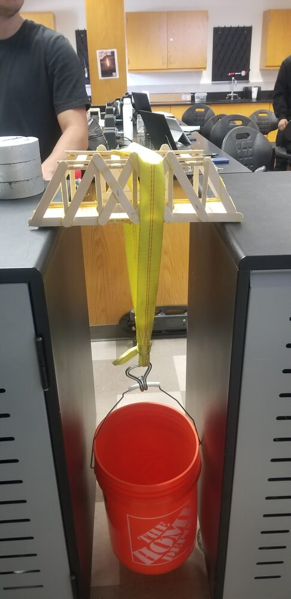

Featured work
A few pieces you can open, run, or inspect — an Android app, shop software, welding, and a tested bridge.

BEZ App Manager
Android app that lists installed apps, sorts by size and usage, and bulk-uninstalls the ones you don’t need.
BlueCAD & G-Code
A 2D CAD app and a CNC G-code trainer. Both have Windows installers and browser versions you can try.

Welding
SMAW through all-position work, TIG, and metal fab — with NC3 certificates and shop photos.

Truss bridge
Designed the members, built the bridge, and load-tested it to failure against the prediction.